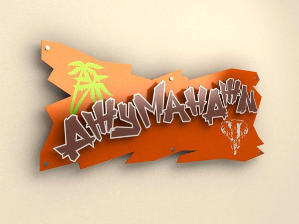
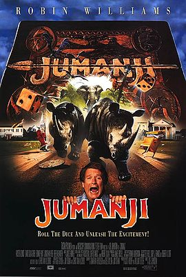
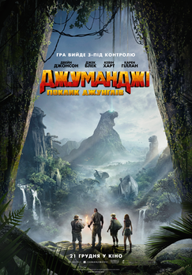

Кінофільм Джуманджі 1 і 2 - америнкаський фільм-фентезі. У ньому розказується історія про загадкову гру. Кожен хід у грі примушує учаників пережити неймовірні пригоди. При чому кожна пригода - ризикована і може принести смерть: напад гігантських павуків, акул, мавп, носорогів, ягуарів, божевільного мисливця...
У грі беруть участь 5 гравців. Кожен з них робить хід і намагається вижити у смертельній пригоді. Гра закінчується тоді, коли хтось із гравців потрапляє на поле "Джуманджі" і вголос промовляє це слово. Було знято два фільма "Джуманджі".

Джуманджі: Поклик джунглів. Частина1. Рік виходу - 1995. Хлопчик Алан знаходить гру. Коли він робить свій перший крок, його всмоктує у гру. Через 26 років діти Джуді і Пітер Шеперд чують барабанний бій Джуманджі і починають грати на горищі. Алан приєднується до гри з Джуді і Пітером, але коли кістки не рухаються на дошці, він розуміє, що вони продовжують ту ж гру, що він і Сара почали багато років тому. Алан змушує обманом Сару приєднатися до них. Пізніше з'являється Ван Пелт, мисливець на диких тварин, який починає полювати на Алана, але чоловіку вдається виграти саме вчасно, коли Ван Пелт уже збирається стріляти в нього, в результаті чого всі елементи джунглів всмоктуються назад в дошку у формі вихору.
Більше про фільм-
див. посилання

Джуманджі: Поклик джунглів. Частина 2. Рік виходу - 2017. Четверо підлітків вирішили зіграти у стару комп'ютерну гру під назвою «Джуманджі», про яку раніше ніхто з них не чув. Але після вибору персонажів щось пішло не так, і всі перемістилися у 1996 рік, перетворившись на своїх персонажів. Спенсер став відважним шукачем пригод, Фрідж втратив півметра зросту і тепер є коротуном, Бетані перетворилася на пухлого старого професора, а Марта — на неймовірно красиву амазонку. Всі вони потрапили у привабливий та жахливо небезпечний світ джунглів, де померти дуже легко. Вони повинні діяти разом, щоб знайти дорогу додому з цієї жахливої гри.
Більше про фільм -
див. посилання